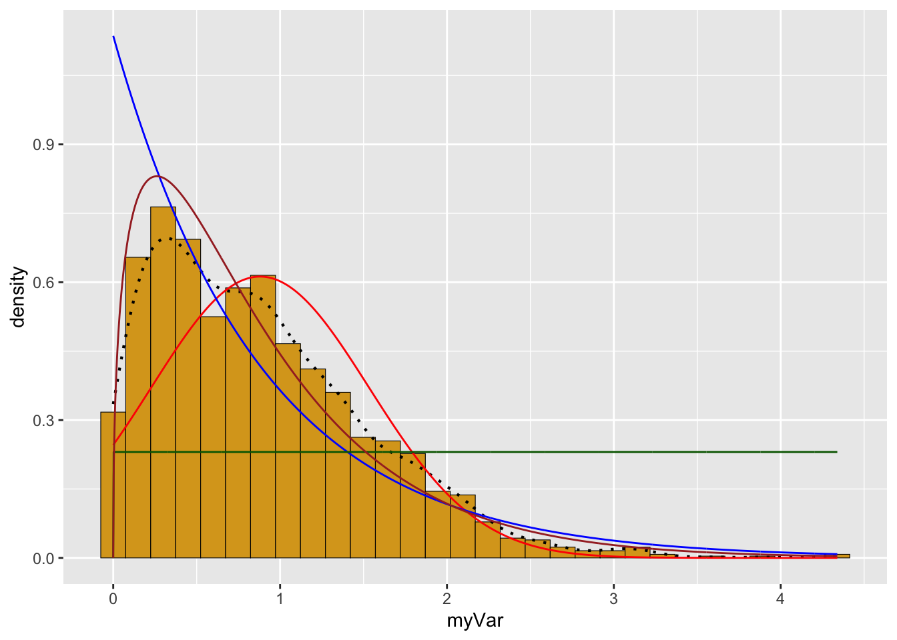

library(ggplot2) # for graphics
library(MASS) # for maximum likelihood estimation
library(dplyr)##
## Attaching package: 'dplyr'## The following object is masked from 'package:MASS':
##
## select## The following objects are masked from 'package:stats':
##
## filter, lag## The following objects are masked from 'package:base':
##
## intersect, setdiff, setequal, union# quick and dirty, a truncated normal distribution to work on the solution set
z <- rnorm(n=3000,mean=0.2)
z <- data.frame(1:3000,z)
names(z) <- list("ID","myVar")
z <- z[z$myVar>0,]
str(z)## 'data.frame': 1706 obs. of 2 variables:
## $ ID : int 3 4 5 9 16 18 19 20 22 24 ...
## $ myVar: num 0.8497 0.8126 0.9856 1.0199 0.0951 ...summary(z$myVar)## Min. 1st Qu. Median Mean 3rd Qu. Max.
## 0.001097 0.355358 0.768178 0.880154 1.264783 4.339257# plot histogram of data
p1 <- ggplot(data=z, aes(x=myVar, y=..density..)) +
geom_histogram(color="black",fill="goldenrod",size=0.2) ## Warning: Using `size` aesthetic for lines was deprecated in ggplot2 3.4.0.
## ℹ Please use `linewidth` instead.
## This warning is displayed once every 8 hours.
## Call `lifecycle::last_lifecycle_warnings()` to see where this warning was
## generated.print(p1)## Warning: The dot-dot notation (`..density..`) was deprecated in ggplot2 3.4.0.
## ℹ Please use `after_stat(density)` instead.
## This warning is displayed once every 8 hours.
## Call `lifecycle::last_lifecycle_warnings()` to see where this warning was
## generated.## `stat_bin()` using `bins = 30`. Pick better value with `binwidth`.# add empirical density curve (does not assume probability distribution, just smooths shape of histogram)
p1 <- p1 + geom_density(linetype="dotted",size=0.75)
print(p1)## `stat_bin()` using `bins = 30`. Pick better value with `binwidth`.# fit normal distribution to data + grab maximum likelihood estimators
normPars <- fitdistr(z$myVar,"normal")
print(normPars)## mean sd
## 0.88015372 0.65158389
## (0.01577542) (0.01115490)str(normPars)## List of 5
## $ estimate: Named num [1:2] 0.88 0.652
## ..- attr(*, "names")= chr [1:2] "mean" "sd"
## $ sd : Named num [1:2] 0.0158 0.0112
## ..- attr(*, "names")= chr [1:2] "mean" "sd"
## $ vcov : num [1:2, 1:2] 0.000249 0 0 0.000124
## ..- attr(*, "dimnames")=List of 2
## .. ..$ : chr [1:2] "mean" "sd"
## .. ..$ : chr [1:2] "mean" "sd"
## $ n : int 1706
## $ loglik : num -1690
## - attr(*, "class")= chr "fitdistr"normPars$estimate["mean"] # note structure of getting a named attribute## mean
## 0.8801537# plot normal probability density
meanML <- normPars$estimate["mean"]
sdML <- normPars$estimate["sd"]
xval <- seq(0,max(z$myVar),len=length(z$myVar))
stat <- stat_function(aes(x = xval, y = ..y..), fun = dnorm, colour="red", n = length(z$myVar), args = list(mean = meanML, sd = sdML))
p1 + stat## `stat_bin()` using `bins = 30`. Pick better value with `binwidth`.# plot exponential probability density
expoPars <- fitdistr(z$myVar,"exponential")
rateML <- expoPars$estimate["rate"]
stat2 <- stat_function(aes(x = xval, y = ..y..), fun = dexp, colour="blue", n = length(z$myVar), args = list(rate=rateML))
p1 + stat + stat2## `stat_bin()` using `bins = 30`. Pick better value with `binwidth`.# plot uniform probability density
stat3 <- stat_function(aes(x = xval, y = ..y..), fun = dunif, colour="darkgreen", n = length(z$myVar), args = list(min=min(z$myVar), max=max(z$myVar)))
p1 + stat + stat2 + stat3## `stat_bin()` using `bins = 30`. Pick better value with `binwidth`.# plot gamma probability density
gammaPars <- fitdistr(z$myVar,"gamma")## Warning in densfun(x, parm[1], parm[2], ...): NaNs produced## Warning in densfun(x, parm[1], parm[2], ...): NaNs produced
## Warning in densfun(x, parm[1], parm[2], ...): NaNs produced
## Warning in densfun(x, parm[1], parm[2], ...): NaNs produced
## Warning in densfun(x, parm[1], parm[2], ...): NaNs produced
## Warning in densfun(x, parm[1], parm[2], ...): NaNs produced
## Warning in densfun(x, parm[1], parm[2], ...): NaNs producedshapeML <- gammaPars$estimate["shape"]
rateML <- gammaPars$estimate["rate"]
stat4 <- stat_function(aes(x = xval, y = ..y..), fun = dgamma, colour="brown", n = length(z$myVar), args = list(shape=shapeML, rate=rateML))
p1 + stat + stat2 + stat3 + stat4## `stat_bin()` using `bins = 30`. Pick better value with `binwidth`.
# plot beta probability density
pSpecial <- ggplot(data=z, aes(x=myVar/(max(myVar + 0.1)), y=..density..)) +
geom_histogram(color="grey60",fill="cornsilk",size=0.2) +
xlim(c(0,1)) +
geom_density(size=0.75,linetype="dotted")
betaPars <- fitdistr(x=z$myVar/max(z$myVar + 0.1),start=list(shape1=1,shape2=2),"beta")## Warning in densfun(x, parm[1], parm[2], ...): NaNs produced
## Warning in densfun(x, parm[1], parm[2], ...): NaNs produced
## Warning in densfun(x, parm[1], parm[2], ...): NaNs produced
## Warning in densfun(x, parm[1], parm[2], ...): NaNs produced
## Warning in densfun(x, parm[1], parm[2], ...): NaNs producedshape1ML <- betaPars$estimate["shape1"]
shape2ML <- betaPars$estimate["shape2"]
statSpecial <- stat_function(aes(x = xval, y = ..y..), fun = dbeta, colour="orchid", n = length(z$myVar), args = list(shape1=shape1ML,shape2=shape2ML))
pSpecial + statSpecial## `stat_bin()` using `bins = 30`. Pick better value with `binwidth`.## Warning: Removed 2 rows containing missing values (`geom_bar()`).# The normal distribution seems to fit this dataset best, which is to be expected when it was generated from a normal distribution (using "rnorm")!library(ggplot2) # for graphics
library(MASS) # for maximum likelihood estimation
library(dplyr)
# Using data from Allen et al., 2018 - mean unique units per cycle
# Reading in the data
z <- read.csv("Allen et al - Proceedings B Supplementary Data - Raw Data 3.csv",header=TRUE,sep=",")
str(z)## 'data.frame': 13 obs. of 13 variables:
## $ Year : int 2002 2003 2004 2005 2006 2007 2008 2009 2010 2011 ...
## $ Mean.Unique.Units.per.Cycle: num 20.1 11.1 18.8 21.9 17.5 ...
## $ Mean.Total.Units.per.Cycle : num 171 101 153 215 123 ...
## $ Mean.Song.Cycle.Length..m. : num 7.45 5.17 7.71 7.64 4.35 ...
## $ Mean.Themes : num 6.86 3.75 4.42 3.97 3.92 3.5 5.31 2.78 4.69 4.31 ...
## $ Mean.Phrase.Length : num 22.7 13 14.6 16.3 15.9 ...
## $ mean.PCA.of.Themes : num 0.536 -1.159 -0.183 0.312 0.492 ...
## $ Total.Score : num 2.294 -3.3 -0.478 0.795 -1.121 ...
## $ Song.Level.Score : num 0.132 -2.521 -0.178 1.002 -1.771 ...
## $ Theme.Level.Score : num 3.1775 -2.1681 -0.5603 0.0543 0.1069 ...
## $ Song.Level.Entropy : num 0.148 0.612 0.433 0.146 0.347 ...
## $ Theme.Level.Entropy : num 0.725 0.904 0.85 1.001 1.34 ...
## $ Individuality : num 31.4 12.3 21.1 26.2 NA ...z$myVar <-z$Mean.Unique.Units.per.Cycle
summary(z)## Year Mean.Unique.Units.per.Cycle Mean.Total.Units.per.Cycle
## Min. :2002 Min. :11.08 Min. :101.1
## 1st Qu.:2005 1st Qu.:16.25 1st Qu.:152.5
## Median :2008 Median :18.78 Median :170.8
## Mean :2008 Mean :20.04 Mean :172.2
## 3rd Qu.:2011 3rd Qu.:23.50 3rd Qu.:204.1
## Max. :2014 Max. :29.75 Max. :228.0
##
## Mean.Song.Cycle.Length..m. Mean.Themes Mean.Phrase.Length
## Min. : 4.253 Min. :2.780 Min. :12.96
## 1st Qu.: 6.328 1st Qu.:3.750 1st Qu.:14.60
## Median : 7.450 Median :4.310 Median :15.93
## Mean : 7.196 Mean :4.505 Mean :16.25
## 3rd Qu.: 7.713 3rd Qu.:4.920 3rd Qu.:16.31
## Max. :11.060 Max. :6.860 Max. :22.67
##
## mean.PCA.of.Themes Total.Score Song.Level.Score Theme.Level.Score
## Min. :-1.15876 Min. :-3.2997 Min. :-2.5206 Min. :-2.4552
## 1st Qu.:-0.50409 1st Qu.:-1.4860 1st Qu.:-1.6282 1st Qu.:-0.5603
## Median :-0.13506 Median :-0.4777 Median : 0.1094 Median :-0.2084
## Mean :-0.05374 Mean : 0.0000 Mean : 0.0000 Mean : 0.0000
## 3rd Qu.: 0.49235 3rd Qu.: 1.4054 3rd Qu.: 1.4188 3rd Qu.: 0.4083
## Max. : 0.92238 Max. : 3.3521 Max. : 2.5897 Max. : 3.1775
##
## Song.Level.Entropy Theme.Level.Entropy Individuality myVar
## Min. :0.03744 Min. :0.7253 Min. :12.28 Min. :11.08
## 1st Qu.:0.14788 1st Qu.:0.9425 1st Qu.:25.96 1st Qu.:16.25
## Median :0.26520 Median :1.0102 Median :31.44 Median :18.78
## Mean :0.27329 Mean :1.1955 Mean :34.30 Mean :20.04
## 3rd Qu.:0.34729 3rd Qu.:1.3715 3rd Qu.:39.14 3rd Qu.:23.50
## Max. :0.61224 Max. :1.8287 Max. :60.52 Max. :29.75
## NA's :2# plot histogram of data
p1 <- ggplot(data=z, aes(x=myVar, y=after_stat(density))) + geom_histogram(color="black",fill="goldenrod",size=0.2)
print(p1)## `stat_bin()` using `bins = 30`. Pick better value with `binwidth`.# excluded the smoothing, because there's really not much data to smooth!
# fit normal distribution to data + grab maximum likelihood estimators
normPars <- fitdistr(z$myVar,"normal")
print(normPars)## mean sd
## 20.038462 5.171887
## ( 1.434423) ( 1.014290)str(normPars)## List of 5
## $ estimate: Named num [1:2] 20.04 5.17
## ..- attr(*, "names")= chr [1:2] "mean" "sd"
## $ sd : Named num [1:2] 1.43 1.01
## ..- attr(*, "names")= chr [1:2] "mean" "sd"
## $ vcov : num [1:2, 1:2] 2.06 0 0 1.03
## ..- attr(*, "dimnames")=List of 2
## .. ..$ : chr [1:2] "mean" "sd"
## .. ..$ : chr [1:2] "mean" "sd"
## $ n : int 13
## $ loglik : num -39.8
## - attr(*, "class")= chr "fitdistr"normPars$estimate["mean"] # note structure of getting a named attribute## mean
## 20.03846# plot normal probability density
meanML <- normPars$estimate["mean"]
sdML <- normPars$estimate["sd"]
xval <- seq(0,max(z$myVar),len=length(z$myVar))
stat <- stat_function(aes(x = xval, y = ..y..), fun = dnorm, colour="red", n = length(z$myVar), args = list(mean = meanML, sd = sdML))
p1 + stat## `stat_bin()` using `bins = 30`. Pick better value with `binwidth`.# doesn't fit very well - seems to be same/similar probability of all means except ~19, which has a higher density
# plot exponential probability density
expoPars <- fitdistr(z$myVar,"exponential")
rateML <- expoPars$estimate["rate"]
stat2 <- stat_function(aes(x = xval, y = ..y..), fun = dexp, colour="blue", n = length(z$myVar), args = list(rate=rateML))
p1 + stat + stat2## `stat_bin()` using `bins = 30`. Pick better value with `binwidth`.# doesn't fit well
# plot uniform probability density
stat3 <- stat_function(aes(x = xval, y = ..y..), fun = dunif, colour="darkgreen", n = length(z$myVar), args = list(min=min(z$myVar), max=max(z$myVar)))
p1 + stat + stat2 + stat3## `stat_bin()` using `bins = 30`. Pick better value with `binwidth`.# the fit's ok, but not great - doesn't include the high probability of ~19
# plot gamma probability density
gammaPars <- fitdistr(z$myVar,"gamma")
shapeML <- gammaPars$estimate["shape"]
rateML <- gammaPars$estimate["rate"]
stat4 <- stat_function(aes(x = xval, y = ..y..), fun = dgamma, colour="brown", n = length(z$myVar), args = list(shape=shapeML, rate=rateML))
p1 + stat + stat2 + stat3 + stat4## `stat_bin()` using `bins = 30`. Pick better value with `binwidth`.# probably the best fit, but still not great
# plot beta probability density
pSpecial <- ggplot(data=z, aes(x=myVar/(max(myVar + 0.1)), y=..density..)) +
geom_histogram(color="grey60",fill="cornsilk",size=0.2) +
xlim(c(0,1)) +
geom_density(size=0.75,linetype="dotted")
betaPars <- fitdistr(x=z$myVar/max(z$myVar + 0.1),start=list(shape1=1,shape2=2),"beta")## Warning in densfun(x, parm[1], parm[2], ...): NaNs produced
## Warning in densfun(x, parm[1], parm[2], ...): NaNs produced
## Warning in densfun(x, parm[1], parm[2], ...): NaNs producedshape1ML <- betaPars$estimate["shape1"]
shape2ML <- betaPars$estimate["shape2"]
statSpecial <- stat_function(aes(x = xval, y = ..y..), fun = dbeta, colour="orchid", n = length(z$myVar), args = list(shape1=shape1ML,shape2=shape2ML))
pSpecial + statSpecial## `stat_bin()` using `bins = 30`. Pick better value with `binwidth`.## Warning: Removed 2 rows containing missing values (`geom_bar()`).# Gamma fit the data best, though we definitely need more data to make an actual curve!